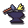
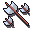
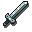

Skills
Idle Fantasy has 23 skills split across four categories: gathering, crafting, support, and combat.
| Skill | Category | Description |
|---|---|---|
 Mining Mining |
Gathering | Extract valuable ores and gems from the earth. |
 Fishing Fishing |
Gathering | Catch fish and aquatic treasures from the waters. |
| Woodcutting | Gathering | Chop trees and gather various types of wood. |
 Farming Farming |
Gathering | Plant and harvest crops from your farming patches. |
 Firemaking Firemaking |
Crafting | Burn logs from your inventory to gain Firemaking XP. Each log burned also produces ashes, which can be scattered in the Prayer skill for bonus Prayer XP. |
| Agility | Support | Train Agility to reduce session times across all skills. Level 99 cuts 20 minutes off the hour (60 min → 40 min), with a smooth linear reduction as you level up. |
 Thieving |
Gathering | Pickpocket NPCs each session. Success chance depends on your level vs the target. Failed attempts stun you for a frame. Higher tiers drop rare items and large coin purses. |
 Mercantile Mercantile |
Support | Dispatch trade caravans along routes for coins and XP. Higher levels improve shop buy and sell prices and unlock exclusive Merchants Guild goods. |
 Smithing Smithing |
Crafting | Smelt ores into bars and forge powerful metal equipment. |
 Cooking |
Crafting | Cook raw ingredients into food that restores HP in combat. |
 Fletching Fletching |
Crafting | Craft bows and arrows from logs and metal components. |
| Crafting | Crafting | Create jewellery and other crafted items from precious materials. |
 Runecrafting Runecrafting |
Crafting | Craft magical runes from rune essence for use in spellcasting. |
 Herblore Herblore |
Crafting | Brew potions from farming herbs and dungeon reagents to boost your combat stats. |
 Construction Construction |
Crafting | Build furniture using planks and nails to gain XP. Higher Construction levels let you upgrade the town's buildings for permanent bonuses. |
 Attack Attack |
Combat | Improves your melee accuracy, increasing your chance to hit. |
 Strength Strength |
Combat | Increases your maximum melee damage per hit. |
 Defense Defense |
Combat | Reduces the damage you take from enemy attacks. |
 Ranged Ranged |
Combat | Attack enemies from a safe distance using a bow and arrows. |
 Magic Magic |
Combat | Cast powerful spells using runes. Higher levels unlock stronger spells. |
 Hitpoints Hitpoints |
Combat | Your total health. Higher levels let you survive longer in combat. |
 Prayer Prayer |
Support | Bury bones dropped from combat to earn Prayer XP. Higher levels unlock stronger Church blessings. |
 Slayer |
Combat | Receive tasks from the Slayer Master in Town. |
All skills cap at level 99.
Quest Indicators
Quest indicators appear as small superscripted icons next to skill names showing active quest progress. See Quest Categories for documentation of the quest category icons.
Prestige
Once a skill reaches level 99 you can prestige it. Prestiging resets the skill back to level 1 and awards 3 prestige points to spend in that skill's upgrade tree. Equipment that no longer meets its requirements after the reset is swapped for the best valid replacement you own. The skill also gets a 48 hour 2x XP boost after prestiging, so the climb back up is fast.
Every skill has its own tree with several upgrade paths (XP, yield, tool efficiency, and skill-specific specials). Tiers within a path must be bought in order, and tiers beyond the next unowned one stay hidden in-game until you reach them. A skill can be prestiged repeatedly until you have earned enough points to buy every upgrade available to your race.
Spent points can be refunded at any time with a respec, which returns their full cost (24 hour cooldown per skill).
Ironman characters can prestige too, but their race is permanently locked.
Prestige stars earned before v1.14.0 were converted in a one-time migration worth 3 points per star.
Session time reductions may also come from other sources such as the Chronos Spire building
Racial upgrades
Some upgrades can exclusively be unlocked by one race (or in rare cases two) and can't be bought by any other race. Once bought, unless you reset prestige points, these traits will remain even after changing race.
Human
| Skill | Upgrade | Cost (points) |
|---|---|---|
| Mining | +0.025 tool or combat bonus per level of this skill. | 2 |
| Mining | +0.05 tool or combat bonus per level of this skill. | 3 |
| Fishing | +0.025 tool or combat bonus per level of this skill. | 2 |
| Fishing | +0.05 tool or combat bonus per level of this skill. | 3 |
| Woodcutting | +0.025 tool or combat bonus per level of this skill. | 2 |
| Woodcutting | +0.05 tool or combat bonus per level of this skill. | 3 |
| Attack | +0.025 tool or combat bonus per level of this skill. | 2 |
| Attack | +0.05 tool or combat bonus per level of this skill. | 3 |
| Strength | +0.025 tool or combat bonus per level of this skill. | 2 |
| Strength | +0.05 tool or combat bonus per level of this skill. | 3 |
| Defense | +0.025 tool or combat bonus per level of this skill. | 2 |
| Defense | +0.05 tool or combat bonus per level of this skill. | 3 |
| Ranged | +0.025 tool or combat bonus per level of this skill. | 2 |
| Ranged | +0.05 tool or combat bonus per level of this skill. | 3 |
| Magic | +0.025 tool or combat bonus per level of this skill. | 2 |
| Magic | +0.05 tool or combat bonus per level of this skill. | 3 |
| Hitpoints | +0.025 tool or combat bonus per level of this skill. | 2 |
| Hitpoints | +0.05 tool or combat bonus per level of this skill. | 3 |
Elf
| Skill | Upgrade | Cost (points) |
|---|---|---|
| Fishing | Tool efficiency +25%. | 3 |
| Fishing | Tool efficiency +30%. | 4 |
| Thieving | Pickpocket success chance +5%. | 3 |
| Thieving | Pickpocket success chance +10%. | 4 |
| Crafting | 25% of crafting materials are refunded. | 3 |
| Crafting | 30% of crafting materials are refunded. | 4 |
| Ranged | +25% chance to recover spent arrows and runes after combat. | 3 |
| Ranged | +35% chance to recover spent arrows and runes after combat. | 4 |
| Ranged | Unlocks the Elven Shortbow fletching recipe. | 2 |
| Ranged | Unlocks the Elven Longbow fletching recipe. | 4 |
| Prayer | Church blessings last 45% longer. | 3 |
| Prayer | Church blessings last 55% longer. | 4 |
Dwarf
| Skill | Upgrade | Cost (points) |
|---|---|---|
| Mining | +35% items from this skill's sessions. | 3 |
| Mining | +40% items from this skill's sessions. | 4 |
| Smithing | 25% of crafting materials are refunded. | 3 |
| Smithing | 30% of crafting materials are refunded. | 4 |
| Firemaking | Flow-state: +1% yield per interval of continuous activity, up to +100%. | 3 |
| Firemaking | Flow-state interval shortened by 10 minutes. | 4 |
| Construction | Town building upgrades cost 9% less. | 3 |
| Construction | Town building upgrades cost 12% less. | 4 |
| Mercantile | Shop sell prices +9%. | 3 |
| Mercantile | Shop sell prices +12%. | 4 |
Orc
| Skill | Upgrade | Cost (points) |
|---|---|---|
| Cooking | Food heals +25% more in combat. | 3 |
| Cooking | Food heals +30% more in combat. | 4 |
| Attack | +18 effective levels in combat. | 3 |
| Attack | +23 effective levels in combat. | 4 |
| Strength | +18 effective levels in combat. | 3 |
| Strength | +23 effective levels in combat. | 4 |
| Strength | 5% chance to strike a second melee hit. | 1 |
| Strength | 10% chance to strike a second melee hit. | 2 |
| Strength | 15% chance to strike a second melee hit. | 4 |
| Hitpoints | Keep an extra 15% of XP and loot when defeated. | 3 |
| Hitpoints | Keep an extra 30% of XP and loot when defeated. | 4 |
| Slayer | Slayer task points +45%. | 3 |
| Slayer | Slayer task points +60%. | 4 |
Gnome
| Skill | Upgrade | Cost (points) |
|---|---|---|
| Fishing | Pet boosts for this skill are 25% stronger. | 3 |
| Fishing | Pet boosts for this skill are 50% stronger. | 4 |
| Farming | The rotation bonus applies to every crop, no rotation needed. | 5 |
| Farming | +10% items from this skill's sessions. (shared with Halfling) | 3 |
| Fletching | +10% chance to recover spent arrows and runes after combat. | 3 |
| Fletching | +20% chance to recover spent arrows and runes after combat. | 4 |
| Firemaking | Flow-state: +1% yield per interval of continuous activity, up to +100%. | 3 |
| Firemaking | Flow-state interval shortened by 10 minutes. | 4 |
| Construction | Town building upgrades cost 2% less. | 3 |
| Construction | +1 session queue slot. | 5 |
| Prayer | Church blessings cost 10% fewer bones. | 3 |
| Prayer | Church blessings cost 20% fewer bones. | 4 |
Halfling
| Skill | Upgrade | Cost (points) |
|---|---|---|
| Fishing | Flow-state: +1.5% yield per interval of continuous activity, up to +100%. | 3 |
| Fishing | Flow-state interval shortened by 10 minutes. | 4 |
| Woodcutting | Pet boosts for this skill are 25% stronger. | 3 |
| Woodcutting | Pet boosts for this skill are 50% stronger. | 4 |
| Farming | +10% items from this skill's sessions. (shared with Gnome) | 3 |
| Farming | +15% items from this skill's sessions. | 4 |
| Cooking | +10% items from this skill's sessions. | 3 |
| Cooking | +15% items from this skill's sessions. | 4 |
| Construction | 10% of crafting materials are refunded. | 3 |
| Construction | 15% of crafting materials are refunded. | 4 |